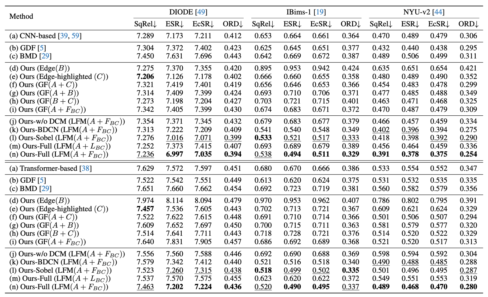

Comparison of different edge maps and their corresponding depth maps. (a) the RGB image, (b) the Sobel edge map, (c) our edge map, and (d) the ground truth edge map. As the quality of the edge map improves, the corresponding depth map can capture more depth details (ignoring structural distortion).
 We employ edge maps as structural control conditions and generate a large number of synthetic images using ControlNet and stable diffusion models.
These images have almost identical edge information but distinct textures and materials.
But the depth maps are highly similar due to their highly consistent edge structure information, which further corroborates the crucial role of edge information in depth estimation.
We employ edge maps as structural control conditions and generate a large number of synthetic images using ControlNet and stable diffusion models.
These images have almost identical edge information but distinct textures and materials.
But the depth maps are highly similar due to their highly consistent edge structure information, which further corroborates the crucial role of edge information in depth estimation.

Based on these observations, we propose a framework named ECFNet.
Given an image, ECFNet first extracts the edge map and computes the edge-highlighted image by removing edge pixels.
These three images (including the original image) are fed into a frozen MDE network to predict initial depth maps as well.
Subsequently, the initial depths are fused using LFM. Finally, the DCM is used to reduce the errors in fused depth from LFM and improve the depth consistency between the final depth and initial depth.

We evaluate our method in three commonly used datasets, DIODE, IBims-1, and NYU-v2. We adopt the SqRel, AbsRel and RMSE, as the standard evaluation metrics, and ordinal error (ORD) to reveal finer details when evaluating with degraded images. We also use Edge Square Relative error (ESR and EcSR) to evaluate the edge depth quality. More details about these metrics are provided in the supplementary material. Besides, since depth suffers from scale ambiguity, we follow the standard depth evaluation protocol to align the predicted depth and the ground truth depth using the least squares method.
Due to the diverse categories of artistic creations, existing depth estimation techniques struggle to accurately obtain depth maps for artistic images, which poses challenges for downstream tasks such as 3D photos and bokeh.

Refer to the pdf paper linked above for more details on qualitative, quantitative, and ablation studies.